Conoscere il Giappone
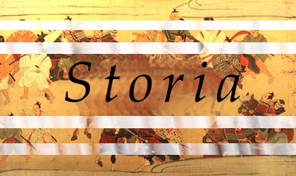

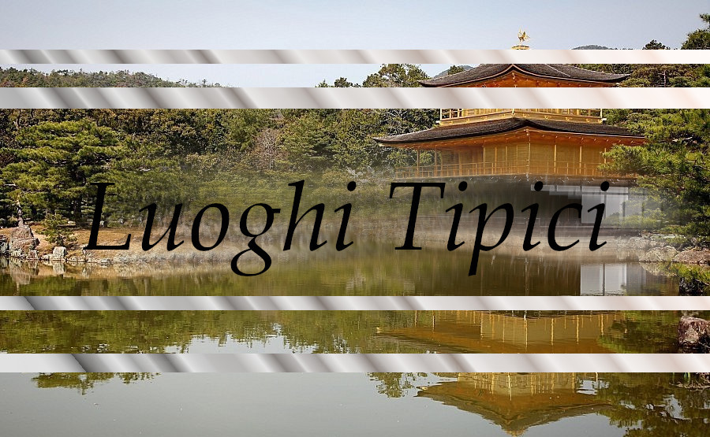

Storia del Giappone
Futuro e tradizione
Oggi il Giappone è una delle più grandi potenze economiche del mondo. Il paese del Sol Levante ha una storia particolare: Intorno al 7° e 8° secolo, ispirandosi al modello cinese, costruì una struttura imperiale.
Tuttavia, gli imperatori esercitarono poteri solo formali, così per oltre mille anni, per poi tornare effettivamente al potere solo nella seconda metà del 19° secolo (periodo Meiji).
L'influenza cinese
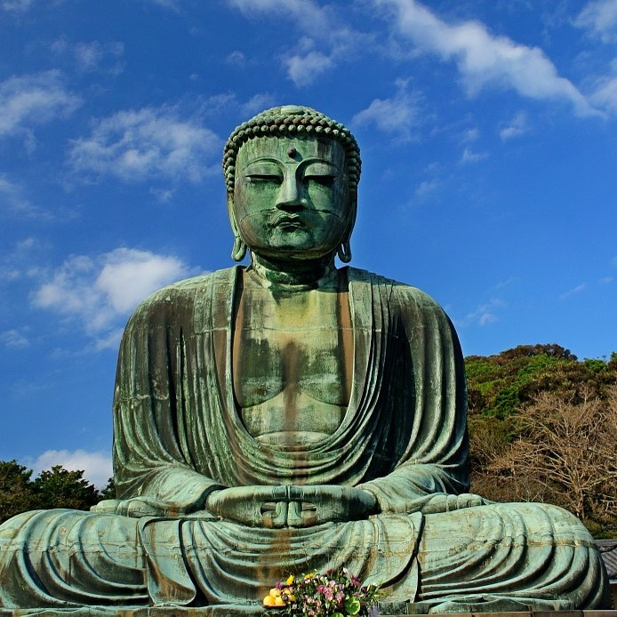
Nel 6° secolo d.C. il paese iniziò a subire in modo significativo l'influenza della cultura cinese, che si manifestò in particolare con l'introduzione del buddismo (Buddha e il buddismo), accanto allo scintoismo, la religione tradizionale giapponese).
Così, tra il 7° e 8° secolo, nacque una struttura imperiale, basato sul modello cinese, e la capitale dell’Impero si spostò da Nara (710) a Heian Kyo, l’attuale Kyoto (794). Struttura che si indebolì con il tempo. Emerse poi la famiglia dei Fujiwara, la quale esercitò un dominio di fatto su gran parte del Giappone (10° secolo in poi).
Nel 12° secolo, gli stessi Fujiwara entrarono in contrasto dal clan dei Minamoto e infine soppiantati da essi.
Il "medioevo" del Giappone
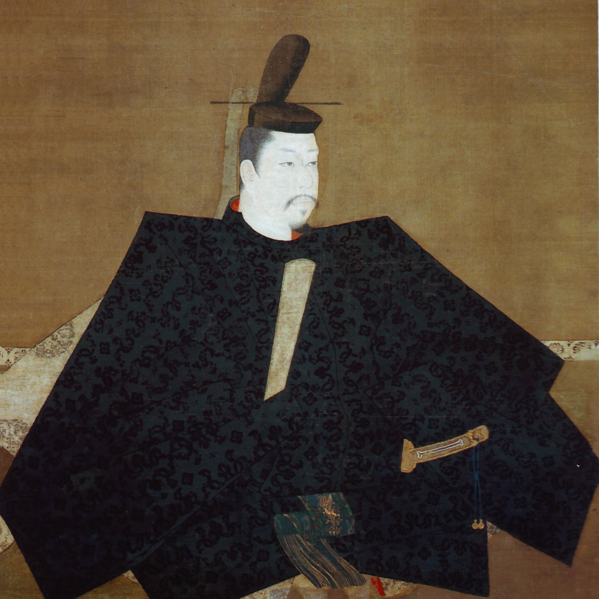
Con l’arrivo dei Minamoto ebbe inizio il “medioevo” giapponese. Essi stabilirono un effettivo controllo sul paese, assunsero il titolo di shogun (comandante dell’esercito) e diedero vita a un regime di tipo militare denominato bakufu (governo della tenda).
Nacquero allora i samurai, un vero e proprio ceto feudale di guerrieri che impresse il proprio carattere alla società giapponese. Il primo shogun ("generalissimo"), ossia la più alta carica militare, fu Minamoto Yoritomo, che ricevette l'investitura dall'imperatore nel 1191. Poco dopo la sua morte (1199), fu il clan degli Hojo ad assumere il potere.
Periodo di gravi turbolenze: nel 1274 e nel 1281 il paese fu attaccato dai Mongoli. In contemporanea cresceva la potenza dei grandi signori feudali e quella dei maggiori monasteri buddisti, dotati di proprie forze militari.
Con l’arrivo degli europei (in primo luogo dei Portoghesi), venne introdotto il cristianesimo
Nella seconda metà del 16° secolo furono poste le premesse per la ricostituzione dell'unità del Giappone. Artefici di questa svolta furono Oda Nobunaga (stabilì proprio dominio su gran parte del paese), Toyotomi Hideyoshi (centralizzò il potere e iniziò a scontrarsi con i Portoghesi e i cristiani) e Tokugawa Ieyasu (shogun).
L'era Tokugawa
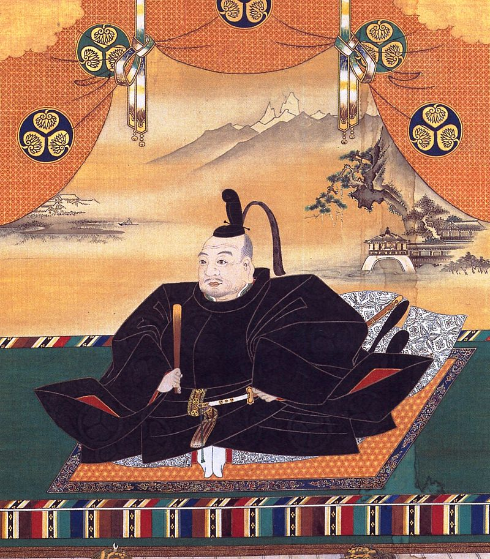
I Tokugawa, rimasti al potere per oltre due secoli e mezzo, spostarono la capitale a Edo (l'attuale Tokyo). Istituirono un sistema di governo centralizzato in cui furono integrati i signori feudali e i samurai.
Avviarono inoltre una politica di rigida chiusura del Giappone al mondo esterno, limitando al minimo i commerci con l'estero e proibendo il cristianesimo. Questo sistema riuscì a garantire la pacificazione interna.
Ma gradualmente, nacque una crisi tra il 18° e il 19° secolo e ci fu uno smantellamento di questo sistema. Questo dopo che gli USA costrinsero il Giappone ad aprire i propri porti per il commercio con l’Occidente e i Tokugawa furono costretti ad accettare questa imposizione.
E nel giro di pochi anni, di fronte alla crescente opposizione di un forte movimento favorevole alla modernizzazione del paese e alla restaurazione del potere imperiale, trasmisero i propri poteri all'imperatore Mutsuhito. Ebbe così inizio l'epoca del rinnovamento Meiji ("governo illuminato"), che coincide con il regno di Mutsuhito.
Dal rinnovamento Meiji alla Seconda Guerra Mondiale
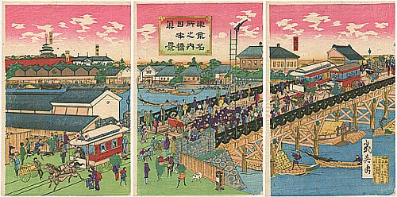
Il rinnovamento Meiji introdusse una svolta decisiva nella storia del Giappone. Il governo imperiale, infatti, ispirandosi a modelli occidentali, avviò un intenso processo di accentramento politico e amministrativo e di modernizzazione economica. Tale processo nel giro di pochi decenni produsse risultati straordinari.
In questo modo il Giappone divenne una grande potenza politica, economica e militare, in grado di competere con le altre potenze mondiali e di inserirsi con successo nei conflitti imperialistici dell'epoca. Interessato a espandersi in direzione della Corea, il Giappone entrò in guerra con la Cina (1894-95) e con la Russia (1904-05), riportando in entrambi i casi schiaccianti vittorie.
Durante la Prima guerra mondiale intervenne a fianco della Gran Bretagna contro gli imperi centrali. Tra le due guerre, il paese risentì pesantemente della crisi economica mondiale del 1929. Il regime assunse tratti sempre più autoritari e diede un nuovo impulso alla politica espansionistica. In questo quadro, il Giappone nel 1931 penetrò in Manciuria, instaurandovi un governo fantoccio.
Nel 1933 uscì dalla Società delle nazioni. Si avvicinò quindi alla Germania nazista e all'Italia fascista, con le quali partecipò alla Seconda guerra mondiale. Nel 1937 diede inizio a una nuova guerra con la Cina, che si prolungò sino al termine del conflitto mondiale.
Nel dicembre del 1941 i Giapponesi, con un attacco a sorpresa alla flotta statunitense di stanza a Pearl Harbor, provocarono l'intervento in guerra degli Stati Uniti, con i quali essi si confrontarono per quasi quattro anni nel Pacifico, continuando a resistere anche dopo la sconfitta della Germania nel maggio 1945.
Il Giappone fu infine costretto alla resa dopo il bombardamento atomico di Hiroshima e Nagasaki da parte degli Americani nell'agosto del 1945.
Il Giappone contemporaneo
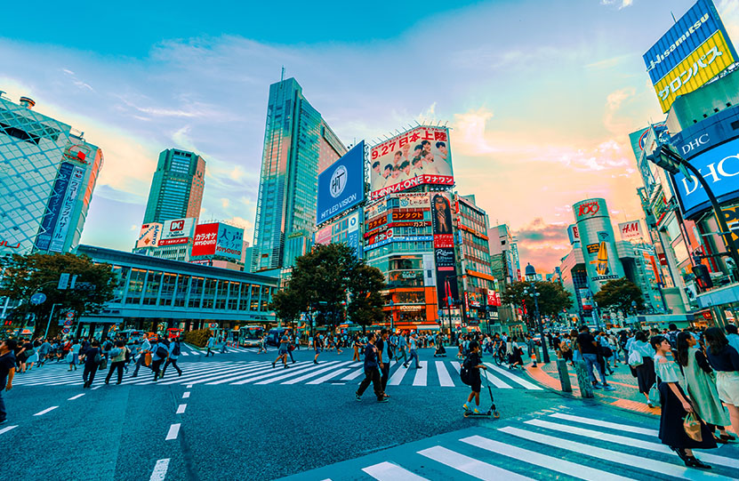
Dopo la sconfitta il Giappone rimase fino al 1951 sotto l'occupazione americana. Il paese venne 'democratizzato' e occidentalizzato. L'imperatore Hirohito fu mantenuto sul trono, ma venne introdotto un regime parlamentare fondato sulla piena sovranità popolare e sulla separazione dei poteri.
Nei decenni successivi, il Giappone ebbe uno sviluppo economico straordinariamente rapido e incisivo, soprattutto nei settori tecnologicamente più avanzati, giungendo a minacciare sui mercati internazionali gli stessi Stati Uniti e l'Europa occidentale e candidandosi a un ruolo egemonico nella sfera dell'Asia e del Pacifico.
Fonte: di Francesco Tuccari - Enciclopedia dei ragazzi (2005), Treccani
Immagini: Google Immagini
Futuro e tradizione
Oggi il Giappone è una delle più grandi potenze economiche del mondo. Il paese del Sol Levante ha una storia particolare: Intorno al 7° e 8° secolo, ispirandosi al modello cinese, costruì una struttura imperiale.
Tuttavia, gli imperatori esercitarono poteri solo formali, così per oltre mille anni, per poi tornare effettivamente al potere solo nella seconda metà del 19° secolo (periodo Meiji).
L'influenza cinese

Nel 6° secolo d.C. il paese iniziò a subire in modo significativo l'influenza della cultura cinese, che si manifestò in particolare con l'introduzione del buddismo (Buddha e il buddismo), accanto allo scintoismo, la religione tradizionale giapponese).Così, tra il 7° e 8° secolo, nacque una struttura imperiale, basato sul modello cinese, e la capitale dell’Impero si spostò da Nara (710) a Heian Kyo, l’attuale Kyoto (794). Struttura che si indebolì con il tempo. Emerse poi la famiglia dei Fujiwara, la quale esercitò un dominio di fatto su gran parte del Giappone (10° secolo in poi).
Nel 12° secolo, gli stessi Fujiwara entrarono in contrasto dal clan dei Minamoto e infine soppiantati da essi.
Il "medioevo" del Giappone

Con l’arrivo dei Minamoto ebbe inizio il “medioevo” giapponese. Essi stabilirono un effettivo controllo sul paese, assunsero il titolo di shogun (comandante dell’esercito) e diedero vita a un regime di tipo militare denominato bakufu (governo della tenda).Nacquero allora i samurai, un vero e proprio ceto feudale di guerrieri che impresse il proprio carattere alla società giapponese. Il primo shogun ("generalissimo"), ossia la più alta carica militare, fu Minamoto Yoritomo, che ricevette l'investitura dall'imperatore nel 1191. Poco dopo la sua morte (1199), fu il clan degli Hojo ad assumere il potere.
Periodo di gravi turbolenze: nel 1274 e nel 1281 il paese fu attaccato dai Mongoli. In contemporanea cresceva la potenza dei grandi signori feudali e quella dei maggiori monasteri buddisti, dotati di proprie forze militari.
Con l’arrivo degli europei (in primo luogo dei Portoghesi), venne introdotto il cristianesimo
Nella seconda metà del 16° secolo furono poste le premesse per la ricostituzione dell'unità del Giappone. Artefici di questa svolta furono Oda Nobunaga (stabilì proprio dominio su gran parte del paese), Toyotomi Hideyoshi (centralizzò il potere e iniziò a scontrarsi con i Portoghesi e i cristiani) e Tokugawa Ieyasu (shogun).
L'era Tokugawa

I Tokugawa, rimasti al potere per oltre due secoli e mezzo, spostarono la capitale a Edo (l'attuale Tokyo). Istituirono un sistema di governo centralizzato in cui furono integrati i signori feudali e i samurai.Avviarono inoltre una politica di rigida chiusura del Giappone al mondo esterno, limitando al minimo i commerci con l'estero e proibendo il cristianesimo. Questo sistema riuscì a garantire la pacificazione interna.
Ma gradualmente, nacque una crisi tra il 18° e il 19° secolo e ci fu uno smantellamento di questo sistema. Questo dopo che gli USA costrinsero il Giappone ad aprire i propri porti per il commercio con l’Occidente e i Tokugawa furono costretti ad accettare questa imposizione.
E nel giro di pochi anni, di fronte alla crescente opposizione di un forte movimento favorevole alla modernizzazione del paese e alla restaurazione del potere imperiale, trasmisero i propri poteri all'imperatore Mutsuhito. Ebbe così inizio l'epoca del rinnovamento Meiji ("governo illuminato"), che coincide con il regno di Mutsuhito.
Dal rinnovamento Meiji alla Seconda Guerra Mondiale

Il rinnovamento Meiji introdusse una svolta decisiva nella storia del Giappone. Il governo imperiale, infatti, ispirandosi a modelli occidentali, avviò un intenso processo di accentramento politico e amministrativo e di modernizzazione economica. Tale processo nel giro di pochi decenni produsse risultati straordinari.In questo modo il Giappone divenne una grande potenza politica, economica e militare, in grado di competere con le altre potenze mondiali e di inserirsi con successo nei conflitti imperialistici dell'epoca. Interessato a espandersi in direzione della Corea, il Giappone entrò in guerra con la Cina (1894-95) e con la Russia (1904-05), riportando in entrambi i casi schiaccianti vittorie.
Durante la Prima guerra mondiale intervenne a fianco della Gran Bretagna contro gli imperi centrali. Tra le due guerre, il paese risentì pesantemente della crisi economica mondiale del 1929. Il regime assunse tratti sempre più autoritari e diede un nuovo impulso alla politica espansionistica. In questo quadro, il Giappone nel 1931 penetrò in Manciuria, instaurandovi un governo fantoccio.
Nel 1933 uscì dalla Società delle nazioni. Si avvicinò quindi alla Germania nazista e all'Italia fascista, con le quali partecipò alla Seconda guerra mondiale. Nel 1937 diede inizio a una nuova guerra con la Cina, che si prolungò sino al termine del conflitto mondiale.
Nel dicembre del 1941 i Giapponesi, con un attacco a sorpresa alla flotta statunitense di stanza a Pearl Harbor, provocarono l'intervento in guerra degli Stati Uniti, con i quali essi si confrontarono per quasi quattro anni nel Pacifico, continuando a resistere anche dopo la sconfitta della Germania nel maggio 1945.
Il Giappone fu infine costretto alla resa dopo il bombardamento atomico di Hiroshima e Nagasaki da parte degli Americani nell'agosto del 1945.
Il Giappone contemporaneo

Dopo la sconfitta il Giappone rimase fino al 1951 sotto l'occupazione americana. Il paese venne 'democratizzato' e occidentalizzato. L'imperatore Hirohito fu mantenuto sul trono, ma venne introdotto un regime parlamentare fondato sulla piena sovranità popolare e sulla separazione dei poteri.Nei decenni successivi, il Giappone ebbe uno sviluppo economico straordinariamente rapido e incisivo, soprattutto nei settori tecnologicamente più avanzati, giungendo a minacciare sui mercati internazionali gli stessi Stati Uniti e l'Europa occidentale e candidandosi a un ruolo egemonico nella sfera dell'Asia e del Pacifico.
Immagini: Google Immagini
Sushi
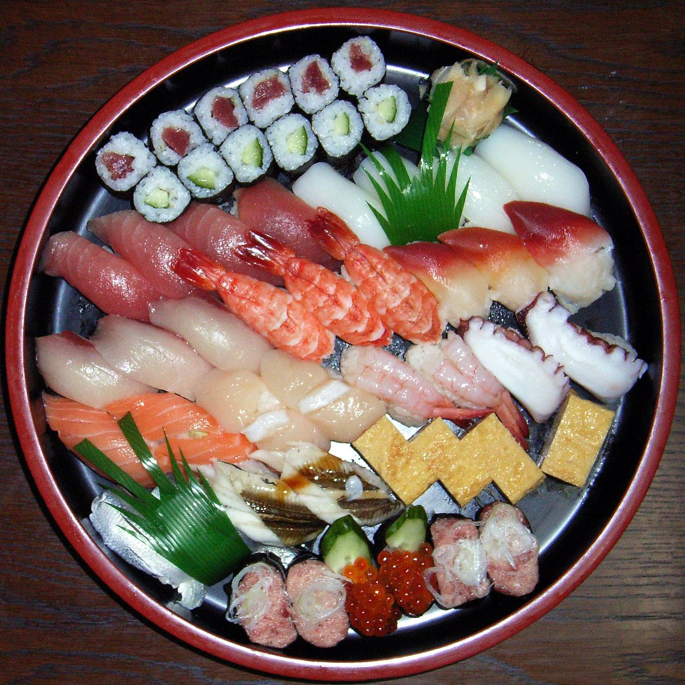
Sashimi
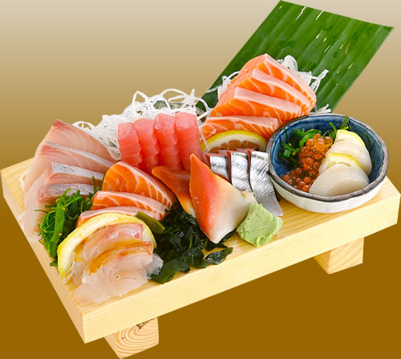
Ramen
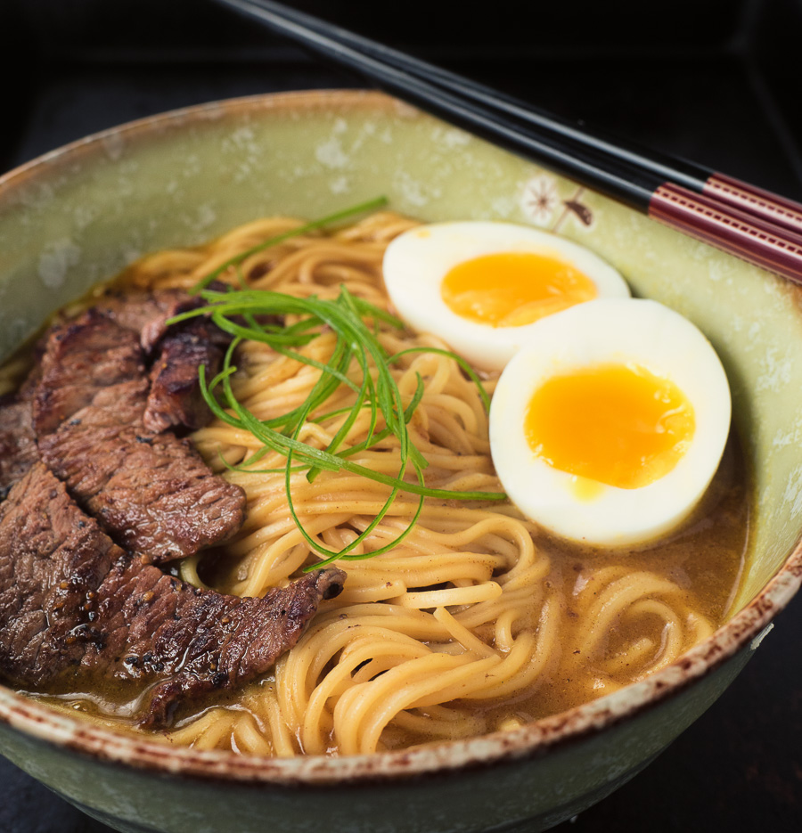
Udon
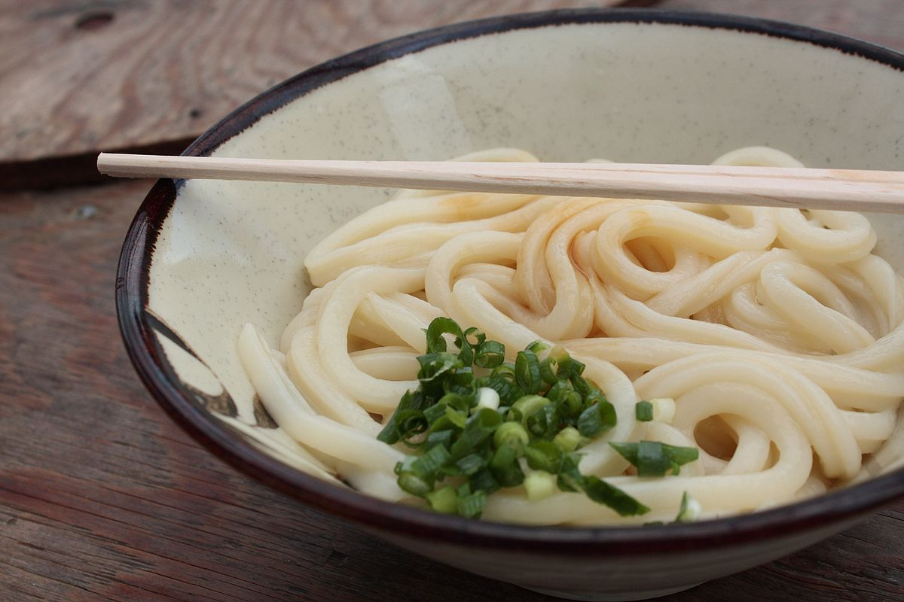
Takoyaki
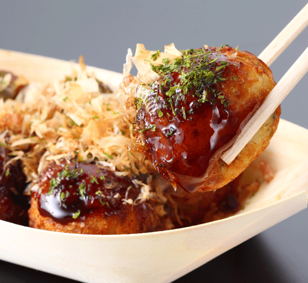
Curry giapponese
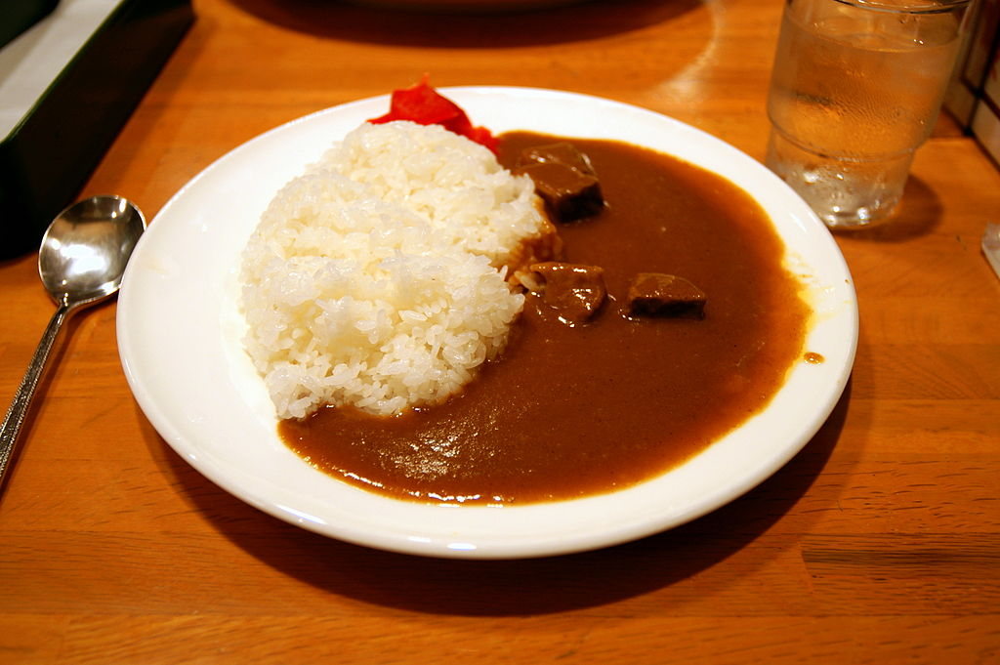
Dango
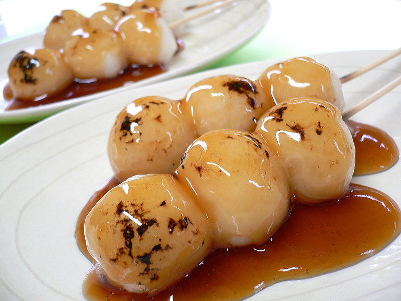
Dorayaki
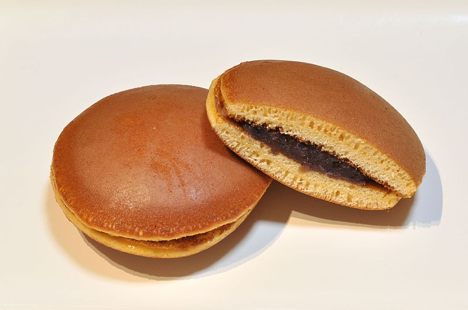
Mochi
 Taiyaki
Taiyaki
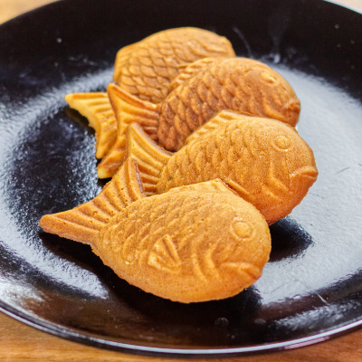
Fonte: Wikipedia
Immagini: Google Immagini
Sushi

Sashimi

Ramen

Udon

Takoyaki

Curry giapponese

Dango

Dorayaki

Mochi
Taiyaki

Immagini: Google Immagini
Luoghi da vedere
Tokyo
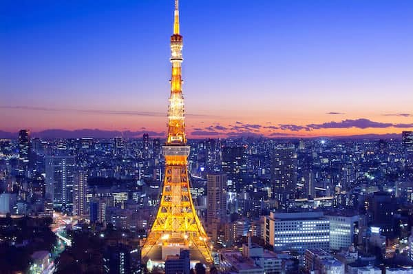
Usciamo un po’ dal Giappone autentico, immergendoci nella frenetica Tokyo, capitale del Giappone. È una città enorme e complessa, la seconda al mondo per dimensioni (dopo Pechino).
Tra i quartieri più famosi da vedere abbiamo Ginza, la zona commerciale con negozi di lusso, luci multicolore, oltre a un famosissimo mercato del pesce. Ovviamente, anche il Palazzo Imperiale è da non perdere.
Per una fuga nel passato di Tokyo, non c’è nulla che possa competere con il quartiere di Asakusa.
Le numerose strade isolate e strette, sono fiancheggiate da vecchie case e botteghe che vendono oggetti tradizionali, dai kimono ai pettini fatti a mano. Il Tempio di Kannon d’Asakusa, il cui perimetro brulica di commercianti, è il luogo ideale per fare provvista di souvenir. Shinjuku, nella parte ovest e alla moda della città, è un mix di bar popolari e discoteche rumorose con grandi magazzini e negozi che vi proporranno uno shopping raffinato e sofisticato.
Nelle vicinanze, nel quartiere di Hatsudai, sorge il complesso del Tokyo Opera City, che ospita tra le sue mura un’opera di grande imponenza. Odaiba, costruita su un terreno bonificato nel porto di Tokyo, è uno dei punti nevralgici della capitale. Un centro commerciale sempre in fermento e il parco divertimenti di Joypolis attirano una folla di visitatori, alcuni dei quali vengono anche per fare un giro sulla ruota panoramica. Si tratta della ruota più alta del mondo. Infine abbiamo anche Akihabara, gli appassionati di manga, anime e videogiochi non possono perdere l’occasione di passarci.
Kyoto e i suoi templi
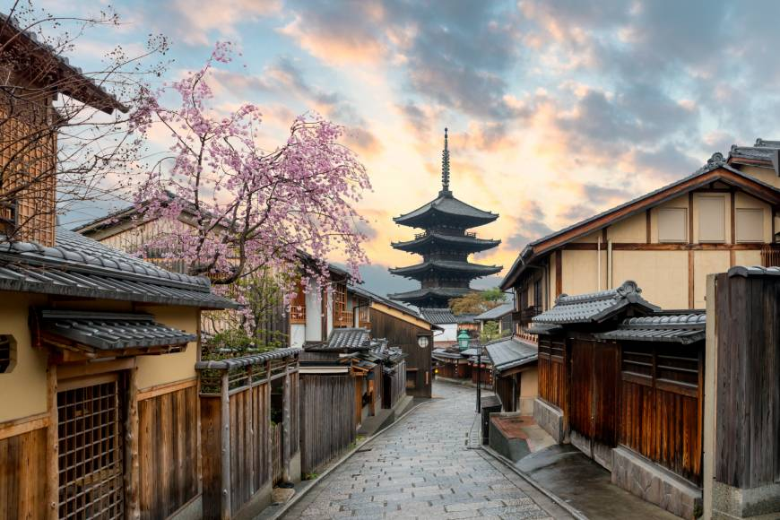
Un’altra città che merita di essere visitata è Kyoto, culla assoluta di tutto ciò che il Giappone ha prodotto nei secoli in termini di arte e cultura.
A Kyoto si possono ammirare numerosi e stupendi templi. Nel centro di Kyoto è situato il palazzo imperiale, architettura famosa per aver raggiunto la quintessenza della semplicità. Il Tempio di Ginkaku-ji, il Padiglione d’Argento, deve la sua fama sia alla sua architettura affascinante, sia ai suoi giardini minimalisti.
E poi c'è lui, il preferito dai turisti: il Tempio di Kinkaku-ji, conosciuto come il Tempio del padiglione d’Oro, questo perché l’intero padiglione è ricoperto di foglie d’oro, Un meraviglioso giardino zen si estende davanti a questo padiglione, replica perfetta dell’edificio originale distrutto nel 1950 e ricostruito nel 1955.
Nara e i suoi templi
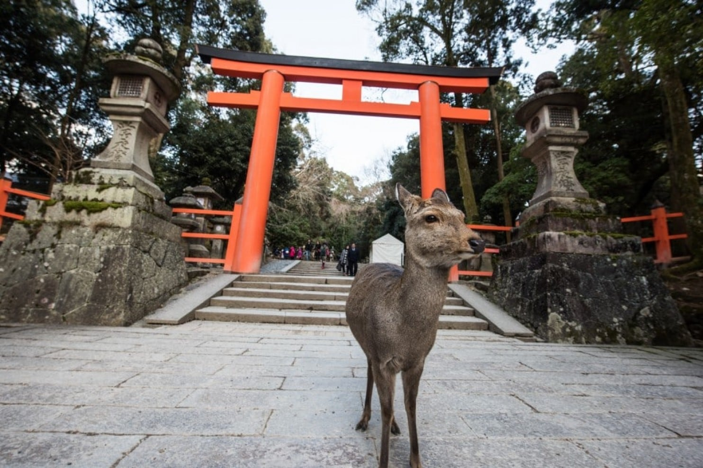
Città di Nara, grande esempio dell’arte, della letteratura e della cultura giapponese.
Bella e conosciuta per i suoi templi: Il celebre Tempio Todai-Ji, dove è possibile ammirare la statua del Grande Budda, il più conosciuto tra i monumenti antichi della città.
Il Daibutsu-den, in cui è contenuta la statua di bronzo, è la costruzione in legno più grande del mondo. Commissionato nel 743 dall’imperatore Shômu (701-756), l’edificio del Todaiji fu completato otto anni più tardi. Il Tempio di Horyuji, uno dei luoghi di culto più importanti di tutto il Giappone.
Oltre ai templi a Nara è possibile visitare un bellissimo parco, conosciuto come Parco dei Cervi poiché cervi maschi e femmine convivono e si divertono insieme in tutta libertà.
Osaka e il suo castello
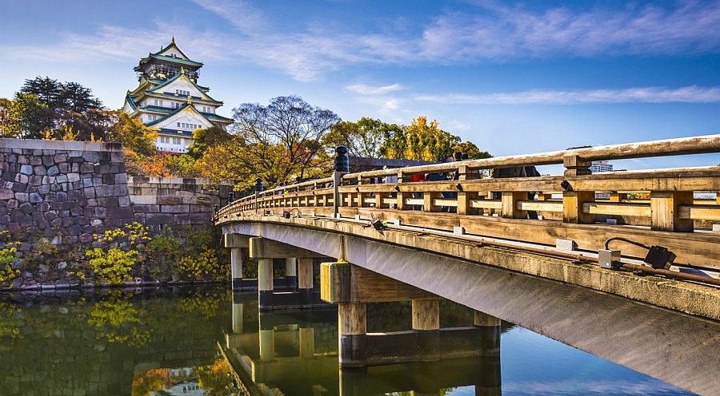
Tra le principali attrazioni della città di Osaka c’è Il Castello di Osaka, costruito alla fine del sedicesimo secolo sotto commissione di uno dei più noti signori della guerra, Toyotomi Hideyoshi. Distrutto da incendi, venne interamente ricostruito nel XX secolo. Il castello è situato all’interno del Parco del Castello di Osaka. Il parco è circondato da imponenti mura e i fossati, le torri, i cancelli e i canali che lo attraversano. La torre è il simbolo principale del castello ed è sede del museo, che mostra al pubblico la storia della costruzione di questo edificio.
Fonte: articolo di Chiara Arroi - 11 agosto 2011, da TgTourism.tv
Fonte immagini: google
Tokyo

Usciamo un po’ dal Giappone autentico, immergendoci nella frenetica Tokyo, capitale del Giappone. È una città enorme e complessa, la seconda al mondo per dimensioni (dopo Pechino).Tra i quartieri più famosi da vedere abbiamo Ginza, la zona commerciale con negozi di lusso, luci multicolore, oltre a un famosissimo mercato del pesce. Ovviamente, anche il Palazzo Imperiale è da non perdere.
Per una fuga nel passato di Tokyo, non c’è nulla che possa competere con il quartiere di Asakusa.
Le numerose strade isolate e strette, sono fiancheggiate da vecchie case e botteghe che vendono oggetti tradizionali, dai kimono ai pettini fatti a mano. Il Tempio di Kannon d’Asakusa, il cui perimetro brulica di commercianti, è il luogo ideale per fare provvista di souvenir. Shinjuku, nella parte ovest e alla moda della città, è un mix di bar popolari e discoteche rumorose con grandi magazzini e negozi che vi proporranno uno shopping raffinato e sofisticato.
Nelle vicinanze, nel quartiere di Hatsudai, sorge il complesso del Tokyo Opera City, che ospita tra le sue mura un’opera di grande imponenza. Odaiba, costruita su un terreno bonificato nel porto di Tokyo, è uno dei punti nevralgici della capitale. Un centro commerciale sempre in fermento e il parco divertimenti di Joypolis attirano una folla di visitatori, alcuni dei quali vengono anche per fare un giro sulla ruota panoramica. Si tratta della ruota più alta del mondo. Infine abbiamo anche Akihabara, gli appassionati di manga, anime e videogiochi non possono perdere l’occasione di passarci.
Kyoto e i suoi templi

Un’altra città che merita di essere visitata è Kyoto, culla assoluta di tutto ciò che il Giappone ha prodotto nei secoli in termini di arte e cultura.A Kyoto si possono ammirare numerosi e stupendi templi. Nel centro di Kyoto è situato il palazzo imperiale, architettura famosa per aver raggiunto la quintessenza della semplicità. Il Tempio di Ginkaku-ji, il Padiglione d’Argento, deve la sua fama sia alla sua architettura affascinante, sia ai suoi giardini minimalisti.
E poi c'è lui, il preferito dai turisti: il Tempio di Kinkaku-ji, conosciuto come il Tempio del padiglione d’Oro, questo perché l’intero padiglione è ricoperto di foglie d’oro, Un meraviglioso giardino zen si estende davanti a questo padiglione, replica perfetta dell’edificio originale distrutto nel 1950 e ricostruito nel 1955.
Nara e i suoi templi

Città di Nara, grande esempio dell’arte, della letteratura e della cultura giapponese.Bella e conosciuta per i suoi templi: Il celebre Tempio Todai-Ji, dove è possibile ammirare la statua del Grande Budda, il più conosciuto tra i monumenti antichi della città.
Il Daibutsu-den, in cui è contenuta la statua di bronzo, è la costruzione in legno più grande del mondo. Commissionato nel 743 dall’imperatore Shômu (701-756), l’edificio del Todaiji fu completato otto anni più tardi. Il Tempio di Horyuji, uno dei luoghi di culto più importanti di tutto il Giappone.
Oltre ai templi a Nara è possibile visitare un bellissimo parco, conosciuto come Parco dei Cervi poiché cervi maschi e femmine convivono e si divertono insieme in tutta libertà.
Osaka e il suo castello

Tra le principali attrazioni della città di Osaka c’è Il Castello di Osaka, costruito alla fine del sedicesimo secolo sotto commissione di uno dei più noti signori della guerra, Toyotomi Hideyoshi. Distrutto da incendi, venne interamente ricostruito nel XX secolo. Il castello è situato all’interno del Parco del Castello di Osaka. Il parco è circondato da imponenti mura e i fossati, le torri, i cancelli e i canali che lo attraversano. La torre è il simbolo principale del castello ed è sede del museo, che mostra al pubblico la storia della costruzione di questo edificio.Fonte immagini: google